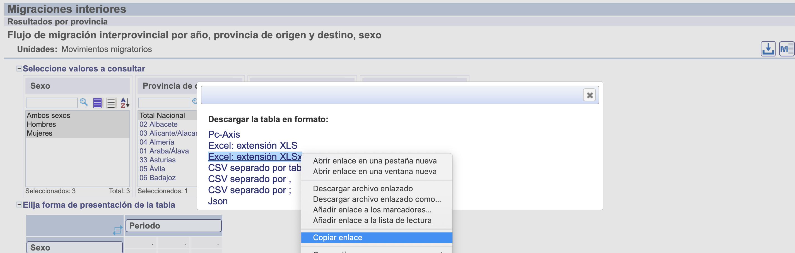

download.file(url="http://destio.us.es/calvo/descargas/datos_ordenadores.csv",
destfile = "datos_ordenadores.csv")Práctica 2: Parte 1 (Importar datos: csv, RData y xlsx)
1 Descargas de ficheros de internet: download.file()
Habitualmente se necesitará descargar ficheros de las páginas web de instituciones oficiales, que contienen la información necesaria, y para ello, será conveniente recordar la existencia en R de la función:
download.file(url, destfile, method, quiet = FALSE, mode = "w",
cacheOK = TRUE,
extra = getOption("download.file.extra"), ...)La forma más utilizada de usar esta función es indicando la “url” de descarga y el nombre que tendrá el fichero de destino, “destfile”, como puede verse en el siguiente ejemplo:
En este caso se podría haber indicado un camino relativo para el fichero de destino, por ejemplo, “datos/datos_ordenadores.csv”, copiará el fichero en la subcarpeta “datos” (respecto al directorio de trabajo actual).
El uso de esta función puede ser muy útil para hacer el código reproducible y no será necesario escribir el camino en un navegador para llegar a obtener ese fichero. En el INE, muchas veces el enlace de descarga puede obtenerse utilizando el menú flotante que se activa al pulsar sobre el enlace con el botón derecho del ratón.
Por ejemplo, en la siguiente página web del INE: https://www.ine.es/jaxiT3/Tabla.htm?t=24379&L=0, aparece a la derecha de la página un botón de “descarga” y si pulsamos sobre el se abre una ventana flotante que nos permite elegir entre diferentes formatos de ficheros para descargar toda la información. Si acercamos el ratón sobre cualquiera de ellos y pulsamos el botón derecho, se podrá copiar el enlace de descarga.

A continuación se muestran los enlaces que se han podido copiar:
| Formato | url |
|---|---|
| “px” | https://www.ine.es/jaxiT3/files/t/es/px/24379.px?nocab=1 |
| “excel” | https://www.ine.es/jaxiT3/files/t/es/xlsx/24379.xlsx?nocab=1 |
| “csv, por tabuladores” | https://www.ine.es/jaxiT3/files/t/es/csv/24379.csv?nocab=1 |
| “csv, separado por ‘,’” | https://www.ine.es/jaxiT3/files/t/es/csv_c/24379.csv?nocab=1 |
| “csv, separado por ‘;’” | https://www.ine.es/jaxiT3/files/t/es/csv_sc/24379.csv?nocab=1 |
| “json” | https://servicios.ine.es/wstempus/js/es/DATOS_TABLA/24379?tip=AM |
Nota. Es interesante observar las ligeras diferencias que existen en las urls de los distintos formatos de ficheros.
download.file(
url = "https://www.ine.es/jaxiT3/files/t/es/csv/24379.csv?nocab=1",
destfile = "24379.csv")Nota. Cuando se descargan ficheros excel desde el sistema operativo Windows, se debe añadir la opción mode = "wb" en la llamada a la función: download.file().
download.file(
url = "https://www.ine.es/jaxiT3/files/t/es/xlsx/24379.xlsx?nocab=1",
destfile = "24379.xlsx", mode = "wb")2 Importar datos desde ficheros csv
Los ficheros “csv” se pueden importar con las funciones del sistema base:
read.table()read.csv()read.csv2()
La función read.table() es la más general y versátil:
read.table(file, header = FALSE, sep = "", quote = "\"'",
dec = ".", numerals = c("allow.loss", "warn.loss", "no.loss"),
row.names, col.names, as.is = !stringsAsFactors,
na.strings = "NA", colClasses = NA, nrows = -1,
skip = 0, check.names = TRUE, fill = !blank.lines.skip,
strip.white = FALSE, blank.lines.skip = TRUE,
comment.char = "#",
allowEscapes = FALSE, flush = FALSE,
stringsAsFactors = default.stringsAsFactors(),
fileEncoding = "", encoding = "unknown", text, skipNul = FALSE)2.1 Ejemplo: importar ficheros csv
datos.csv = read.table(file = "datosPractica01.csv", header = TRUE, sep = ",")head(datos.csv,10)| X | Provincia | CCAA | TOTAL | Varon | Mujer |
|---|---|---|---|---|---|
| 1 | 01-Álava | País Vasco | 286387 | 142036 | 144351 |
| 2 | 02-Albacete | Castilla-La Mancha | 364835 | 181461 | 183374 |
| 3 | 03-Alicante/Alacant | Comunidad Valenciana | 1461925 | 722162 | 739763 |
| 4 | 04-Almería | Andalucía | 536731 | 272023 | 264708 |
| 5 | 33-Asturias | Asturias (Principado de) | 1062998 | 508995 | 554003 |
| 6 | 05-Ávila | Castilla y León | 163442 | 81850 | 81592 |
| 7 | 06-Badajoz | Extremadura | 654882 | 323541 | 331341 |
| 8 | 07-Balears (Illes) | Balears (Illes) | 841669 | 417314 | 424355 |
| 9 | 08-Barcelona | Cataluña | 4805927 | 2341592 | 2464335 |
| 10 | 09-Burgos | Castilla y León | 348934 | 174576 | 174358 |
2.2 Ejemplo: importar ficheros csv con el paquete “readr”
Nota: Hacerlo con el paso a paso de RStudio.
library(readr)
datosPractica01 <- read_csv("datosPractica01.csv",
col_types = cols(...1 = col_skip()))New names:
• `` -> `...1`head(datosPractica01,10)| Provincia | CCAA | TOTAL | Varon | Mujer |
|---|---|---|---|---|
| 01-Álava | País Vasco | 286387 | 142036 | 144351 |
| 02-Albacete | Castilla-La Mancha | 364835 | 181461 | 183374 |
| 03-Alicante/Alacant | Comunidad Valenciana | 1461925 | 722162 | 739763 |
| 04-Almería | Andalucía | 536731 | 272023 | 264708 |
| 33-Asturias | Asturias (Principado de) | 1062998 | 508995 | 554003 |
| 05-Ávila | Castilla y León | 163442 | 81850 | 81592 |
| 06-Badajoz | Extremadura | 654882 | 323541 | 331341 |
| 07-Balears (Illes) | Balears (Illes) | 841669 | 417314 | 424355 |
| 08-Barcelona | Cataluña | 4805927 | 2341592 | 2464335 |
| 09-Burgos | Castilla y León | 348934 | 174576 | 174358 |
3 Datos en un fichero RData
Los datos bien definidos que contiene el objeto “datos2_mej” podría guardarse en un fichero con formato “RData” para poder utilizarlo en cualquier estudio posterior sobre ellos. Se podría hacer llamando a la función save() del siguiente modo:
save(datos2_mej,file="datos2_mej.RData")Podría cargarse con ayuda de la función load() del siguiente modo:
load("datos2_mej.RData")3.1 Ejemplo
load(file = "datosPractica01.RData", verbose = TRUE)Loading objects:
datosdatos.RData = datos
str(datos.RData)'data.frame': 52 obs. of 5 variables:
$ Provincia: chr "01-Álava" "02-Albacete" "03-Alicante/Alacant" "04-Almería" ...
$ CCAA : chr "País Vasco" "Castilla-La Mancha" "Comunidad Valenciana" "Andalucía" ...
$ TOTAL : num 286387 364835 1461925 536731 1062998 ...
$ Varon : num 142036 181461 722162 272023 508995 ...
$ Mujer : num 144351 183374 739763 264708 554003 ...Nota: Hacerlo desde RStudio con ratón.
3.2 Guardar varios objetos R importados en ficheros RData
Se puede guardar más de un objeto R al ir separándolos por comas.
save(datos.csv, datosPractica01, datos.RData,
file = "datosPractica01grabados.RData")
# para recuperarlos
# load(file = "datosPractica01grabados.RData", verbose = T) 4 Importar datos desde excel. Paquetes readxl
Para importar datos contenidos en un fichero excel utilizaremos el paquete “readxl”, cuya función principal es: read_excel() (otras variantes con la misma sintaxis son: read_xlsx() y read_xls()). Los datos importados son del tipo “tibble” (data.frame mejorados).
Su uso es muy sencillo cuando se quiere leer el contenido completo de una hoja en un fichero Excel:
datos = read_excel("ficheroexcel.xlsx") # equivalente a:
datos = read_excel("ficheroexcel.xlsx",sheet = 1) Su sintaxis completa es la siguiente:
read_excel(path, sheet = NULL, range = NULL, col_names = TRUE,
col_types = NULL, na = "", trim_ws = TRUE, skip = 0,
n_max = Inf, guess_max = min(1000, n_max),
progress = readxl_progress(), .name_repair = "unique")4.1 Ejemplo:
library(readxl)
datos.xlsx = readxl::read_xlsx(path = "datosPractica01.xlsx")
str(datos.xlsx)tibble [52 × 5] (S3: tbl_df/tbl/data.frame)
$ Provincia: chr [1:52] "01-Álava" "02-Albacete" "03-Alicante/Alacant" "04-Almería" ...
$ CCAA : chr [1:52] "País Vasco" "Castilla-La Mancha" "Comunidad Valenciana" "Andalucía" ...
$ TOTAL : num [1:52] 286387 364835 1461925 536731 1062998 ...
$ Varon : num [1:52] 142036 181461 722162 272023 508995 ...
$ Mujer : num [1:52] 144351 183374 739763 264708 554003 ...4.2 Ejemplo: otras opciones al leer ficheros Excel
datos.xlsx.2 = readxl::read_xlsx(path = "datosPractica01.xlsx",
sheet = 1, range = "A1:C20")
head(datos.xlsx.2)| Provincia | CCAA | TOTAL |
|---|---|---|
| 01-Álava | País Vasco | 286387 |
| 02-Albacete | Castilla-La Mancha | 364835 |
| 03-Alicante/Alacant | Comunidad Valenciana | 1461925 |
| 04-Almería | Andalucía | 536731 |
| 33-Asturias | Asturias (Principado de) | 1062998 |
| 05-Ávila | Castilla y León | 163442 |
4.3 Ejemplo: importar ficheros Excel con el paquete “rio”
Otra opción equivalente es usar la función “import()” del paquete R: “rio”.
datos.xlsx.3 = rio::import(file = "datosPractica01.xlsx", sheet = 1)